Mehfil Guide
Browser-native team chat. No accounts, no servers — your messages stay on your devices.
👋 What is Mehfil?
Mehfil is a single HTML file that runs entirely in your browser. There's no signup, no email address, no cloud account. Your messages are end-to-end encrypted and stored only on the devices of the people in your workspace.
How it works in one sentence
You create a workspace → invite people → messages flow peer-to-peer over WebRTC (or via a relay you control). Nothing routes through Mehfil servers because there are none.
What you need
- Chrome 113+, Firefox 130+, or Safari 17+
- The
index.htmlfile — open it directly or serve it withpython3 -m http.server
🏠 Create a workspace
When you open Mehfil for the first time you see the landing screen. Click Start a workspace.
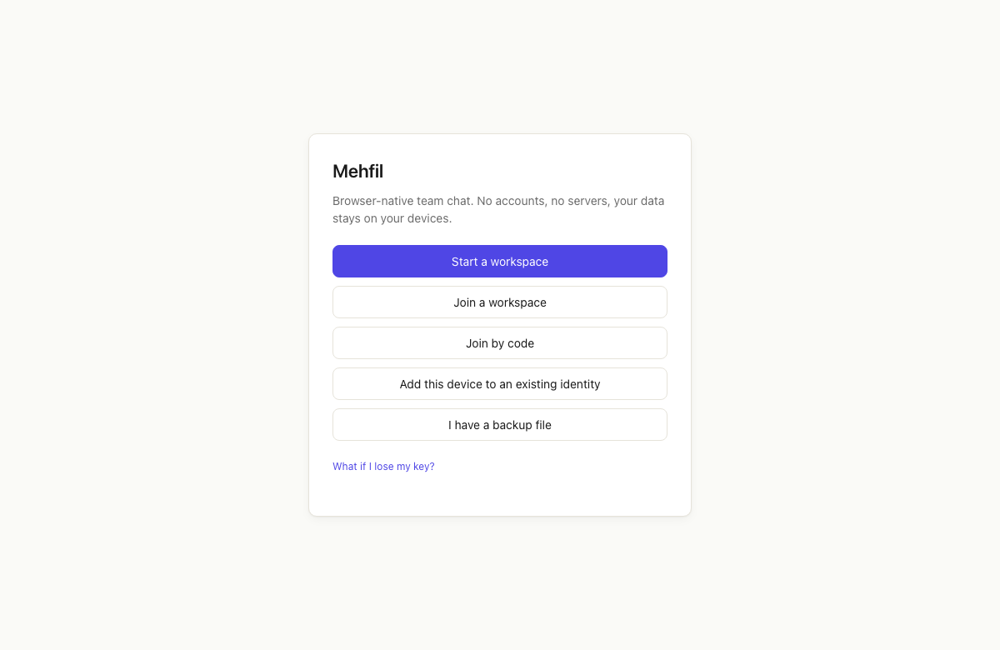
Give the workspace a name (this is just a label visible to members — pick anything).
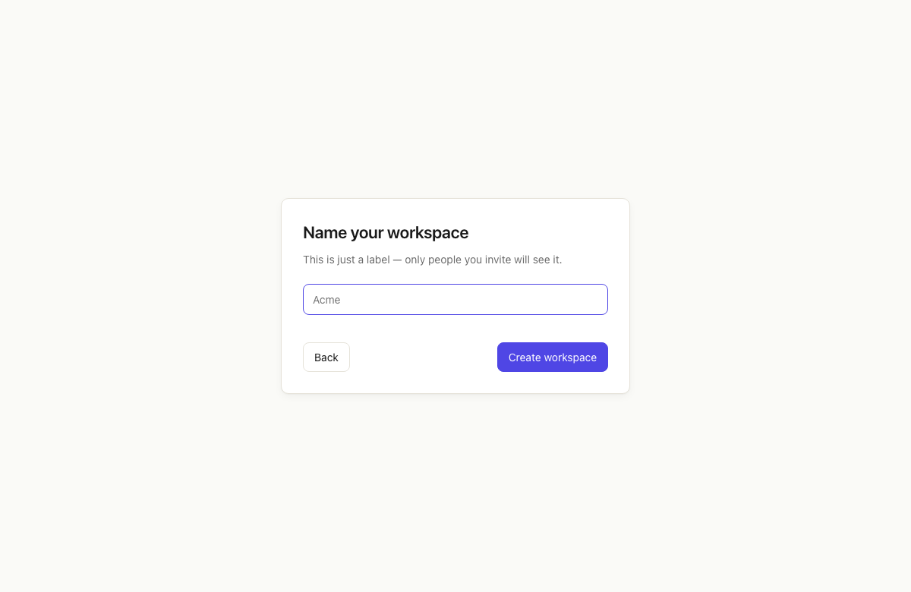
Mehfil generates a fresh Ed25519 identity for you, creates a #general channel, and drops you straight into the workspace.
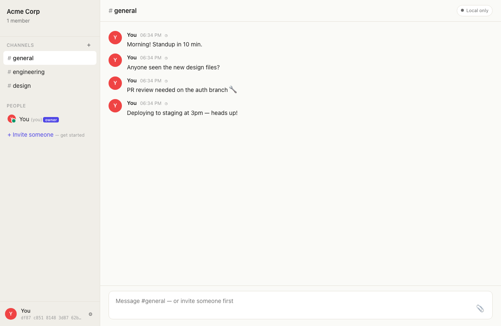
🔗 Invite someone
Click + Invite someone in the sidebar. You have two options:
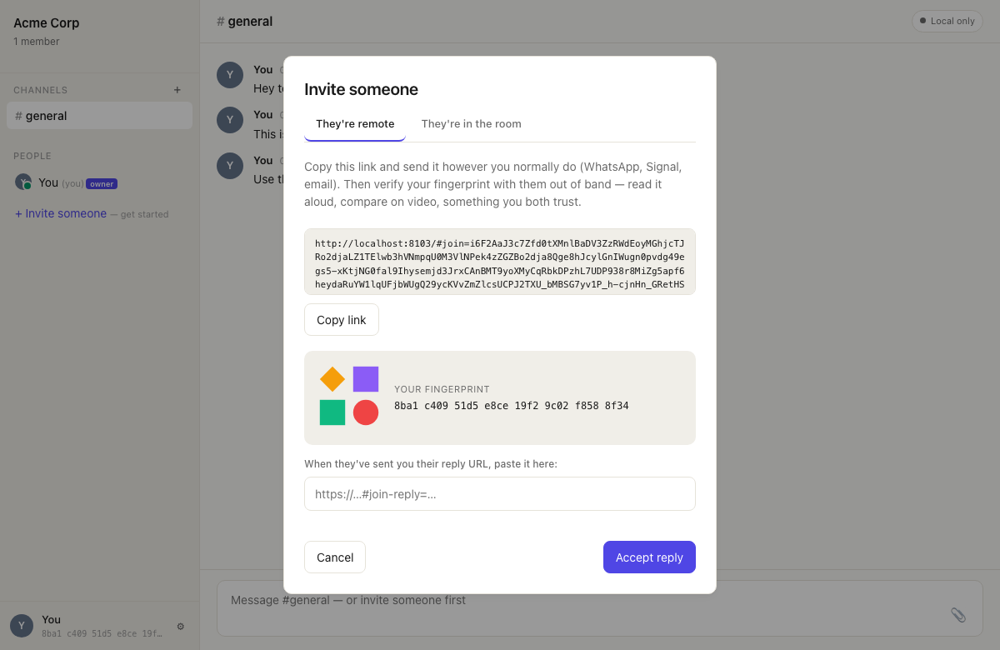
They're in the room (URL invite)
- Copy the invite URL from the They're in the room tab and send it to your invitee via any channel (email, SMS, etc.).
- They paste the URL in their browser. Both sides verify the fingerprint matches — this is the trust check, don't skip it.
- They enter a name and color, click Join. A reply URL appears — they send it back to you.
- You paste the reply URL and click Accept. The badge turns 🟢 Live and history backfills.
Join by code (requires relay)
If you have a relay configured, the modal also shows a 6-word pairing code valid for 5 minutes. Share the words verbally or via text — no URL needed.
🚪 Join a workspace
From the landing screen you have three ways in:
- Join a workspace — paste an invite URL someone sent you.
- Join by code — enter a 6-word code shared by the workspace admin.
- I have a backup file — restore a
.mehfil-keyyou exported from another device.
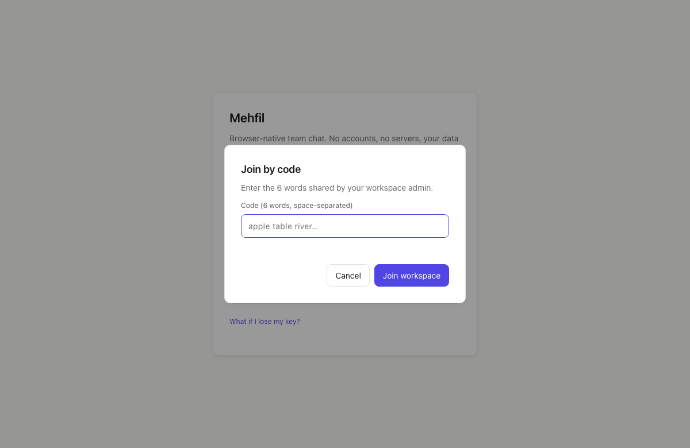
# Channels
Channels are the main places for conversation. #general is created automatically. Use the + button next to the CHANNELS heading to create more.
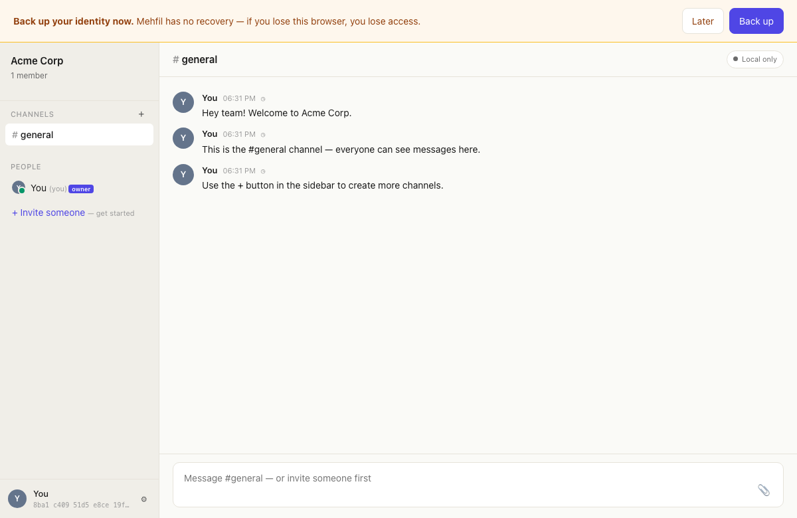
Public vs private
- Public channels — all workspace members can see and join.
- Private channels 🔒 — only invited members can decrypt messages. The channel key is wrapped individually per-member via X25519 ECDH.
Keyboard shortcut
Use Cmd+1–9 to switch between your most recent workspaces. Cmd+T opens the workspace switcher.
💬 Messaging
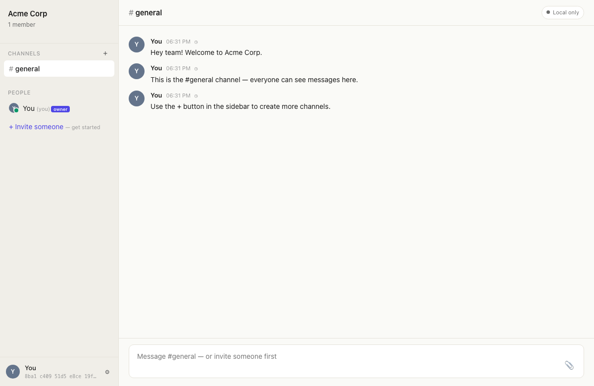
Compose
- Enter — send message
- Shift+Enter — new line
- Type @ to mention someone — an autocomplete popup appears
- Click the 📎 button or drag-and-drop a file to attach (up to 25 MB)
Edit & delete
Hover over one of your own messages to reveal the ✎ (edit) and 🗑 (delete) actions. Only the original sender can edit or delete their messages.
Reactions
Hover a message and click 😊 to open the reaction picker (👍 ❤️ 😂 😮 😢 🙏 👀 ✅). Click a reaction pill to toggle yours on/off.
Threads
Hover a message and click 💬 to open a thread panel on the right. Replies stay attached to the parent message. Press Escape to close the thread panel.
Drafts
Unfinished messages are saved per-channel automatically and restored the next time you open that channel — even after a page reload.
✉️ Direct messages
1:1 DMs
Click any member's name in the People sidebar to open a direct message. The channel id is deterministically derived from your two identities — no setup needed.
Group DMs
Click + Start group DM at the bottom of the People sidebar (visible when there are 3+ members). Pick two or more people and a group DM channel is created with per-sender encrypted keys.
🔍 Search
Press Cmd+K (or Ctrl+K) to open the search palette. It searches across all channels in the current workspace, and across all your workspaces.
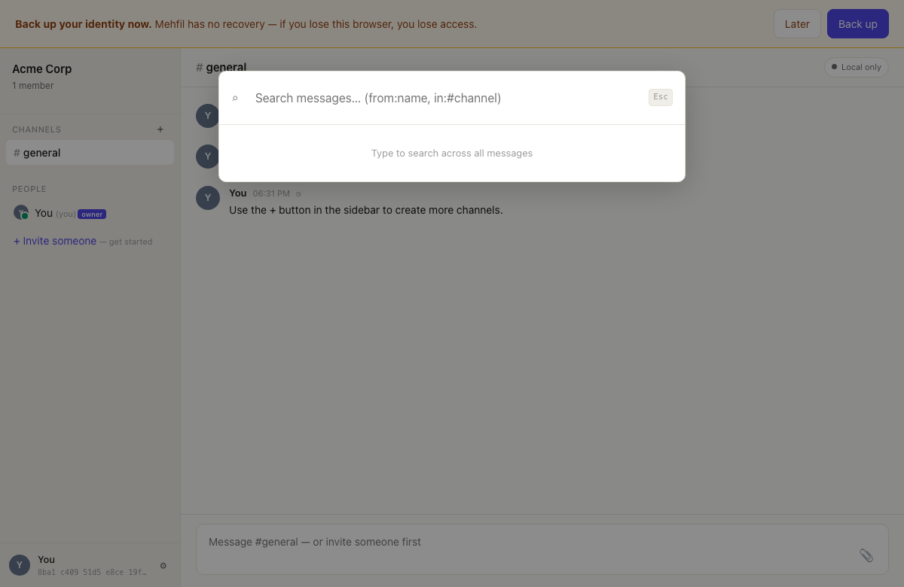
Filters
from:alice— messages from a specific personin:#design— messages in a specific channel- Combine both:
from:alice in:#design
Click any result to jump directly to that message.
🔑 Your identity
Mehfil generates an Ed25519 signing key and an X25519 ECDH key the first time you start a workspace. These live in your browser's IndexedDB — not in any cloud.
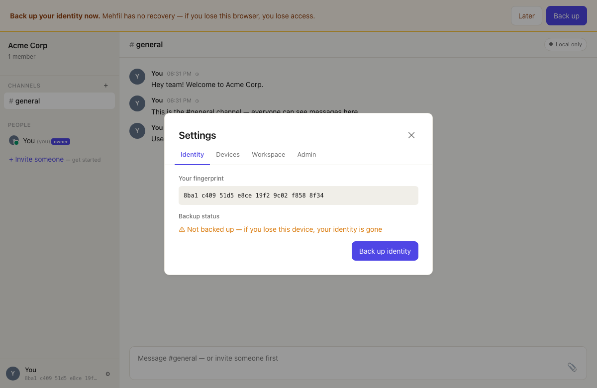
Fingerprint
Your fingerprint is a short hex digest of your public key. When you invite someone, both sides must verify the fingerprint matches before trusting the connection. This is the TOFU (trust-on-first-use) check that prevents impersonation.
💾 Backup & restore
Your identity key never leaves the browser unless you export it. Go to Settings → Identity → Back up identity.
- You'll be asked to set a passphrase. The key is encrypted with PBKDF2 (600,000 rounds) → AES-256-GCM before download.
- The file is named
mehfil-identity.mehfil-key— store it somewhere safe.
Restore from backup
On the landing screen, click I have a backup file, choose the file, and enter your passphrase.
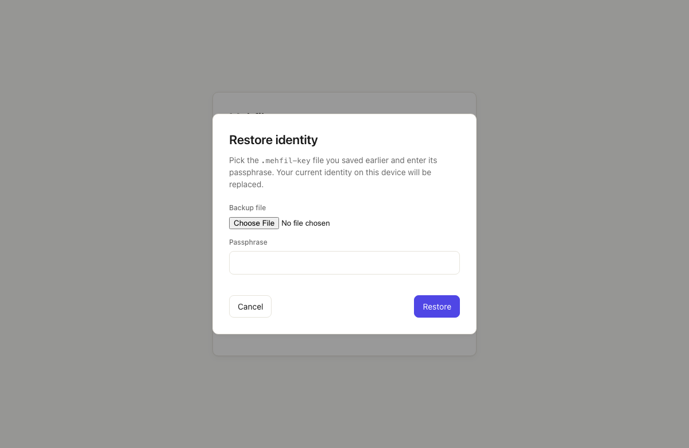
📱 Multiple devices
One identity, any number of devices. Go to Settings → Devices.
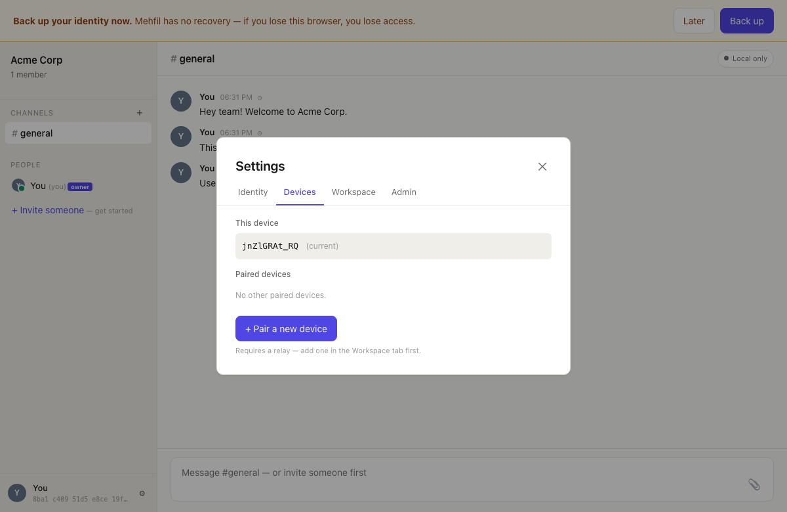
Pair a new device
- On the existing device: Settings → Devices → + Pair a new device. A 6-word pairing code appears (valid 5 minutes). Requires a relay to be configured.
- On the new device: open Mehfil, click Add this device to an existing identity on the landing screen, and enter the 6 words.
- Both devices show a trust card — verify the short code matches, then confirm.
- The new device imports your identity and all workspace keys automatically.
Revoking a device
In Settings → Devices, click Revoke next to any paired device. You can also revoke your own current device (you'll be shown a "Device revoked" screen and all local keys are wiped). Workspace admins can also revoke any device in the Admin tab.
🛡️ Admin controls
Open Settings → Admin (visible to owners and admins).
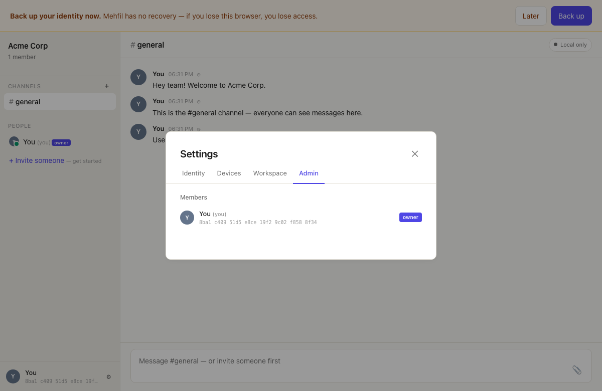
Role badges
Owners and admins show a coloured role badge in the People sidebar. To propose promoting a member to admin, click the ★ button that appears on their row — the proposal is sent to the Admin tab for other admins to co-sign.
Promote by consensus
Promoting a member to admin requires 2 co-signatures from existing admins/owners. This prevents a single compromised account from silently escalating privileges.
- Any admin clicks ★ on a member row (or Promote… in the Admin tab).
- A pending proposal appears in the Admin tab for all other admins.
- A second admin clicks Support. Once the threshold is reached, click Activate to finalise.
Remove a member
Click Remove in the Admin tab. This triggers a full workspace + channel rekey so the removed member's keys become useless for future messages.
Export & import
In Settings → Workspace you can export the entire workspace as an encrypted .workspace file (all messages, channels, members, keys) and import it on another device.
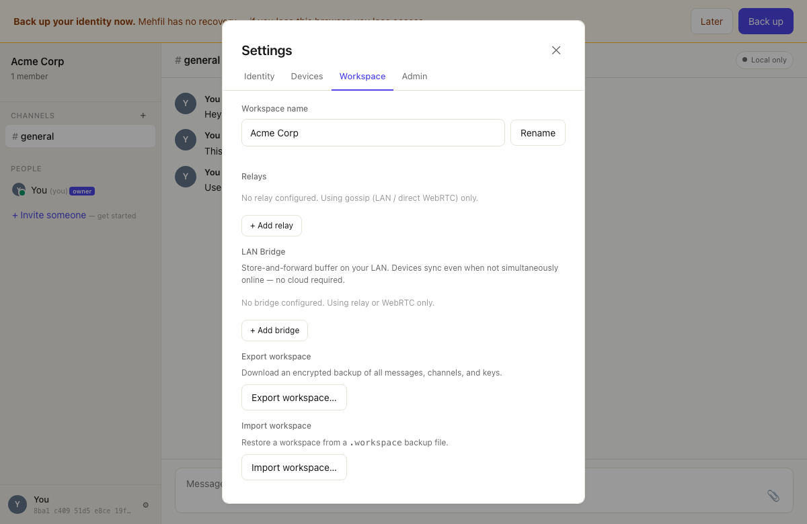
☁️ Relay setup
By default Mehfil is peer-to-peer over WebRTC — both people need to be online at the same time. A relay adds store-and-forward so messages are delivered even when someone is offline.
Deploy in 5 minutes (Cloudflare Workers, free tier)
git clone https://github.com/NakliTechie/relay-cloudflare
cd relay-cloudflare
wrangler kv namespace create MEHFIL_KV # paste the id into wrangler.toml
wrangler secret put MEHFIL_TOKEN # choose a long random token
wrangler deployThen in Mehfil: Settings → Workspace → Relays → + Add relay. Enter the URL and token, click Test connection.
Full setup guide: docs/relay-setup.md
🌐 LAN bridge
The Mehfil Bridge is a small Go binary that runs on any always-on machine in your office or home. It buffers 24 hours of messages locally with no cloud involved.
# macOS (Homebrew)
brew install naklitechie/tap/mehfil-bridge
mehfil-bridge
# prints: Bridge fingerprint: a3f8 92c1 5b04 e7d2In Mehfil: Settings → Workspace → LAN Bridge → + Add bridge, then click Auto-detect. Confirm the fingerprint matches your terminal output.
_mehfil._tcp.local, port 8765) so Mehfil finds it automatically on the same LAN. The fingerprint is pinned on first connect — if it ever changes unexpectedly, Mehfil refuses to connect.Full setup guide including launchd / systemd configs: docs/bridge-setup.md
🎙 Huddles
A huddle is a live audio call inside a workspace. Anyone online can start one and anyone else can jump in — no scheduling, no meeting link, no third-party service. Audio travels directly peer-to-peer, encrypted end-to-end.
Starting a huddle
- Click the 🎙 button in the bottom-left corner of the sidebar (next to the settings gear).
- Your browser asks for microphone permission — allow it.
- A huddle bar appears above the message composer, showing your avatar. You're live.
Joining someone else's huddle
When another member starts a huddle, you'll see their avatar appear in the huddle bar at the bottom of the screen. Click 🎙 to join. Your browser will ask for mic permission if it hasn't already.
Connections form automatically — you don't need to do anything beyond clicking join. Within a couple of seconds, audio is flowing directly between everyone in the call.
Controls
- 🎤 Mute / unmute — the mic button in the huddle bar. When muted your avatar dims and no audio is sent. Your connection stays open so you can unmute any time.
- Leave — the Leave button closes all your audio connections and removes you from the bar for everyone else.
Speaking indicators
Each participant's avatar shows a pulsing ring when they're actively speaking. This is driven by a volume analyser on the incoming audio — no voice-activity algorithm, just raw mic level sampled every 150 ms. It disappears immediately when the person stops talking.
How it works under the hood
Huddles use WebRTC — the same browser technology used for video calls in Google Meet or Zoom, but here it's audio-only and entirely within Mehfil. When you join, Mehfil broadcasts an encrypted huddle.join envelope to every connected member. Each person already in the call responds with a WebRTC offer — a "here's how to reach me" packet. You exchange answers, then ICE candidates (possible network paths) trickle in until a direct route is found. The result is a mesh: with three people in a call there are three separate audio connections, A↔B, A↔C, B↔C.
The signaling (offers, answers, ICE) uses the same encrypted envelope system as messages, so it's protected by your workspace key. The audio itself is encrypted by WebRTC's mandatory DTLS-SRTP — standard in all modern browsers.
Limitations
- Live only: huddles are ephemeral — nothing is recorded or stored. If you reload the page, you'll need to rejoin.
- Online peers only: because audio is peer-to-peer, you can only hear members who are currently connected. The relay doesn't buffer audio.
- Restrictive networks: on very locked-down corporate networks where WebRTC is blocked, the audio connection may not establish. Message delivery (via relay/bridge) is unaffected.
- Mobile: works in Chrome on Android. iOS Safari has partial WebRTC audio support — behaviour varies by iOS version. A relay is recommended for mobile users so messages aren't missed while the tab is in the background.
📲 Using Mehfil on mobile
Mehfil runs in any modern mobile browser — no app store required. Open index.html from a local server on your network, or visit your GitHub Pages URL from your phone.
Getting the app on your phone
- Run
python3 -m http.server 8103on your laptop (or use the GitHub Pages URL). - Find your laptop's local IP address (
ifconfig/ System Settings → Wi-Fi). - On your phone — same Wi-Fi — open
http://192.168.x.x:8103in the browser. - Optionally: save to home screen for a full-screen app experience.
Joining an existing workspace on mobile
The easiest path is a 6-word pairing code from the desktop. No URLs to copy-paste between devices.
- On your desktop: Settings → Devices → + Pair a new device. Six words appear.
- On your phone: tap Add this device to an existing identity on the landing screen, type the six words, tap Join.
- Confirm the trust card matches on both screens. Your identity and all workspace keys transfer automatically.
Alternatively, if someone is inviting you fresh: tap Join by code on the landing screen and enter the invite code your workspace admin shared.
Mobile-specific tips
- Composer: tap the text area to open the keyboard. Tap Send (or press Return on hardware keyboards with "Return sends" enabled).
- Sidebar: on narrow screens the sidebar is hidden by default — tap the ☰ button (top-left) in the guide, or the channel/person name in the header to navigate.
- File attachments: tap 📎 to open the system photo picker or file browser. The 25 MB limit applies on mobile too.
- Reactions & threads: long-press or tap the reaction icon that appears when you tap a message.
- Search: no keyboard shortcut on mobile — a Search button appears at the top of the workspace.
- WebRTC peer connections: work normally on mobile Chrome and Safari. If you're on a restrictive network, configure a relay so messages route via the cloud instead.
Limitations on mobile
- Background sync: iOS Safari aggressively suspends tabs. If you close the browser, you won't receive messages until you reopen it. A relay ensures nothing is lost — messages are stored until your device polls.
- Push notifications: not yet supported. The relay buffers messages for up to 90 days; they arrive the next time you open the app.
- OPFS storage: file attachments are stored in the browser's Origin Private File System. On iOS this may be cleared if the browser storage is full or the OS evicts it — back up important files externally.